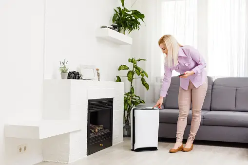
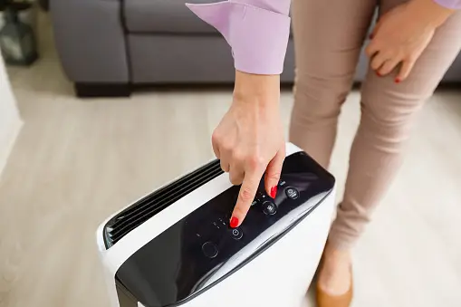
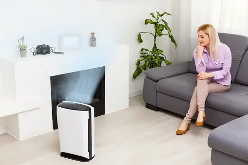
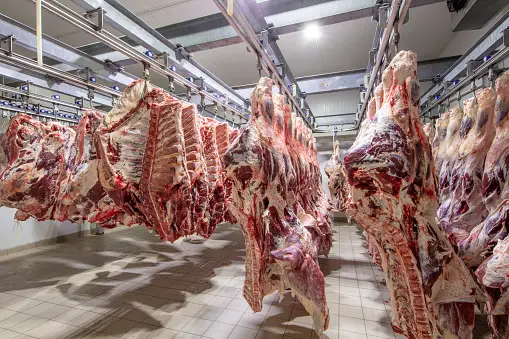

L'UNIVERS DE L'HUMIDITE
Bienvenue sur notre site dédié à l'importance cruciale des appareils d'humidité industrielle. Dans le monde complexe et exigeant de l'industrie, la gestion précise de l'humidité est essentielle pour maintenir la qualité, la sécurité et l'efficacité des opérations. Notre entreprise est fière de vous offrir une gamme complète de solutions avancées pour répondre à ces besoins fondamentaux. Quel est alors son importance ? L'humidité, cette composante fondamentale de notre environnement, est mise à profit de manière ingénieuse à travers une multitude d'appareils et de technologies modernes.L'introduction de capteurs d'humidité de pointe a révolutionné divers secteurs, permettant des avancées significatives dans la qualité de vie et la précision des processus. Prenez l'exemple des systèmes de climatisation intelligents, qui ajustent automatiquement l'humidité dans les maisons et les bureaux pour créer un environnement intérieur confortable, améliorant ainsi notre bien-être et notre productivité.
|  |  |  |
|---|
|  |
|---|
Chez DifeGabon, nous vous guidons dans ce processus crucial. Tout d'abord, identifiez votre secteur d'activité :
par exemple, si vous travaillez dansl'industrie agroalimentaire, optez pour des capteurs d'humidité précis pour maintenir la fraîcheur de vos produits. Dans le secteur pharmaceutique, choisissez des solutions conformes aux normes strictes de qualité. Si vous êtes dans la construction, privilégiez des appareils résistants pour prévenir la corrosion des matériaux. En outre, considérez vos besoins de surveillance en temps réel, de maintenance préventive et de dépannage rapide.
En collaborant avec des partenaires fiables comme DIFE, vous pouvez être sûr de faire le choix éclairé qui propulsera votre entreprise vers le succès. En définitive, les appareils d'humidité industrielle sont au cœur de nombreuses industries, jouant un rôle essentiel dans la préservation de la qualité des produits, la sécurité des opérations et la durabilité des infrastructures. Notre entreprise est déterminée à fournir les outils et les services dont vous avez besoin pour maintenir des niveaux d'humidité optimaux et garantir le succès de votre entreprise. Explorez notre gamme complète de produits et découvrez comment nous pouvons vous aider à atteindre vos objectifs en matière de gestion de l'humidité industrielle.